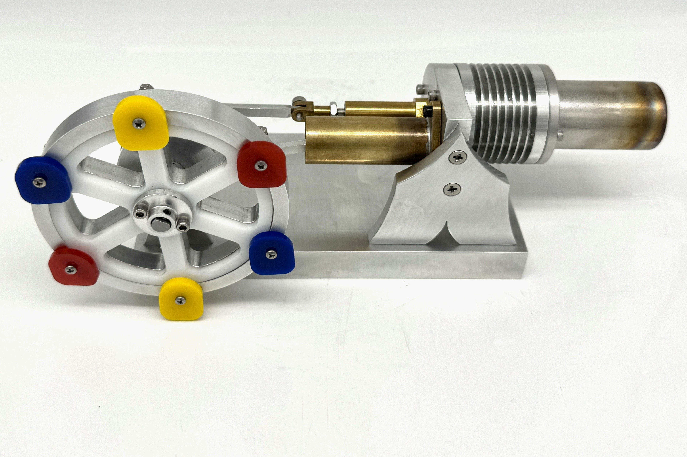
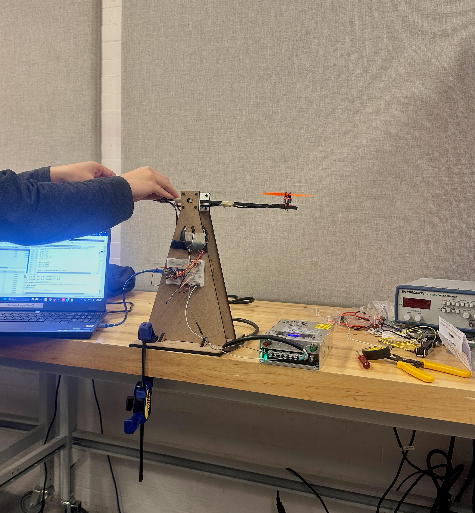
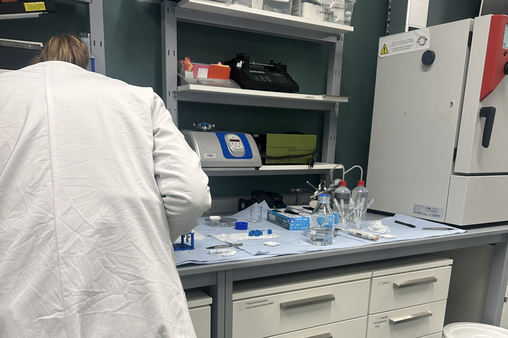
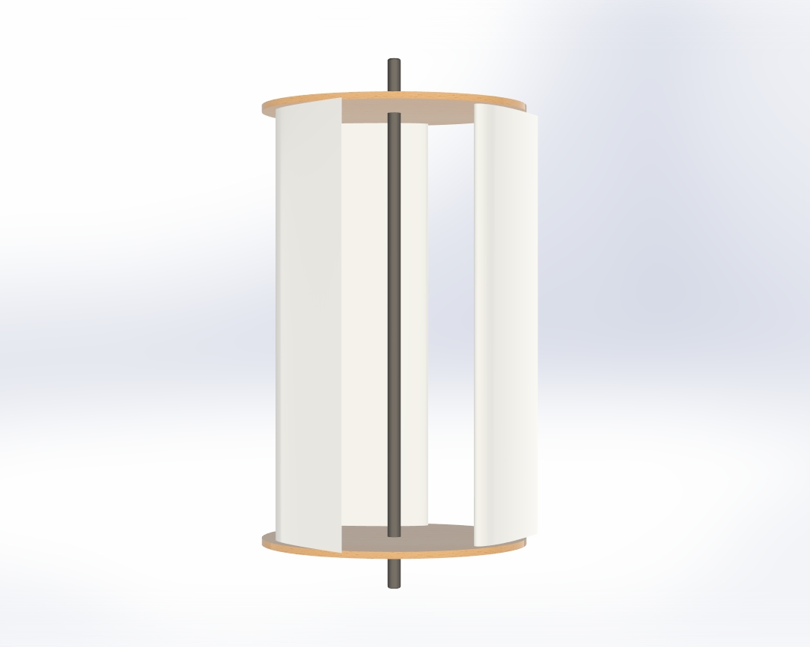
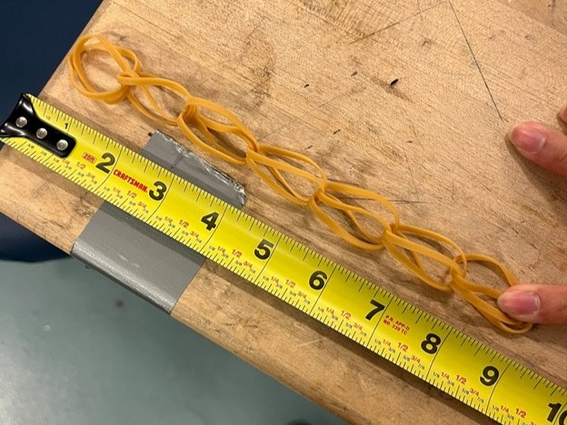

Mechanical Design · Fall 2025
I’m a junior at the University of Pennsylvania studying Mechanical Engineering and Applied Mechanics, with minors in Math and Engineering Entrepreneurship. In Spring 2026, I’m studying abroad at ETH Zürich, a world-renowned engineering institution where I’m broadening my technical perspective in an international environment. I’m focusing my coursework on manufacturing and robotics, and I’m especially interested in sustainable hardware solutions that combine strong mechanical design with practical impact.





